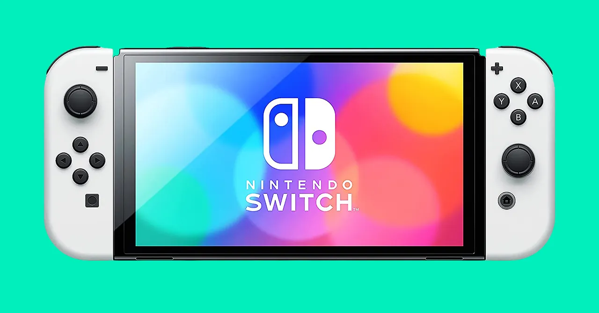

Hello to everyone visiting my website. In this section, I'm going to talk about my leisure activities, although, to be honest, I don't have much free time. I often buy books that I haven't had the chance to read yet, like the ones by Yuval Noah Harari. I enjoy his writing but haven't had the time to finish them. On the other hand, I like to play Nintendo Switch games to de-stress from coding. Apart from that, I spend time with my family and get some much-needed rest.
sapiens book

Nindoswitch